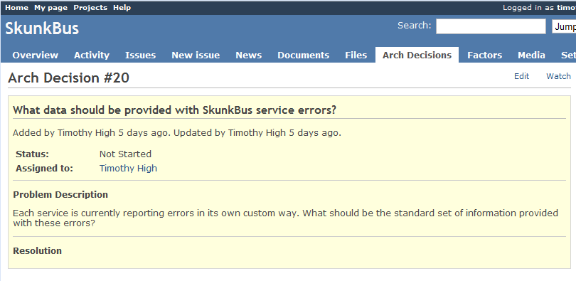

A plugin to manage architecture (and other) decisions for projects in Redmine. Provides a way to collaborate on decisions for distributed teams, and document reasoning for all teams.
This project is maintained by ruxkor
The plugin includes a listing of the Arch Decisions themselves, which are currently limited to the scope of a single project. The ADs have an ID, a status, a summary, and a “Problem Description” field for more detailed information on the context of the decision. ADs currently follow a very simple workflow that isn't being enforced, but is still useful:
Arch Decisions also have a text field called “Resolution” that should be filled out when the status is changed to “Decision Made”. The resolution should explain what the final decision was, summarize why that decision was made, and provide any additional guidance to any developers who will be making sure the AD gets implemented.
In addition to those basic text fields, there are also important supplemental elements embedded within the decisions that play an important role in the documentation and decision-making process (note that these are a new feature that I didn't have in the old Quickbase version):
One of the most important benefits of tracking technical decisions in this way is the possibility of making all decision points and trade offs explicit. There are so many reasons why this is important :
Taking a cue from Craig Larman and others, I call these reasons “Factors”. A factor can be just about anything – a requirement, a hunch, a feature, a factoid – that can be used as a justification for a particular decision. In my personal experience, I have seen these factors tossed about with reckless and wanton abandon, littering the sacred grounds of a design discussion. The RAD plugin attempts to put a little order to this chaos by giving you one place to record this information. In general, it can be detrimental to the flow of a discussion to continuously stop to record these factors, but it can be extremely productive to let the fur fly in the heat of the moment, and then carefully pick out the key factors afterwards when you're ready to clean house.
Factors have a status, which is important in showing which ones have been “challenged” (by marking them as “Validated” once the discussion has completed), including ones that were later shown to be incorrect assumptions (“Refuted”). There is even a text field called “Evidence” wherein the user can record exactly how they came to the conclusion regarding the validity (via external URLs, quotes from a discussion, or even a lame but honest “because Tim said so”).
Also importantly, factors can be reordered on the AD view page by simply dragging a row and placing it in the order desired. This allows you to explicitly declare which factors have a greater weight or priority, which comes in useful when a trade off must be made.
One interesting thing to note about factors is that they may have varying scopes. Some may be very specific to the Arch Decision at hand (e.g. “We will get a big bonus if we pick Strategy A!” or “The coin said ‘heads'”). Some may related to more than one AD (e.g. “The company has mandated that we use open source tools for this project”). Still others may be “global truths” that can even be applied across multiple projects (e.g. “Amazon EC2 does not support multicast between instances” (can this one be refuted yet?)). Factors can be created on their own (via the separate Factors tab), or right in the AD itself. In the latter case, they are automatically given a scope of “Arch Decision”. But this can be changed to something a little more broad. When this happens, the Factor can then be added to multiple ADs as appropriate.
What's a decision without options to choose from? As with factors, my experience has been that people are good at tossing out ideas, but less good at remembering what they were later on. Or understanding anyone's ideas but their own. So the RAD plugin also separates out a section just to track what those alternatives were that everyone proposed. Each one has a “short name”, which can be useful as reference (a little better than “wait, are you talking about the one where command comes in as a message which is then republished, or the one where you stick the command in the database and then you have a periodic task to look them up?”), plus a sightly longer summary. Then there is a detailed description for what that stratesugy would really entail.
Importantly, strategies can then be officially “rejected”, with an explanation as to why (in the future, it might be interesting to point to the key Factors). When this happens, they show up at the bottom of the list, with a big red “X” so that no one is confused as to whether or not that possibility is still being discussed (nor why it was rejected).
In some cases, you have a “there can only be one” situation, where a decision could only be considered to have been made when all the other competing strategies have been rejected. In this case, the Resolution will really just be a rewrite of the surviving strategy and its implications. In other cases, you might have multiple winners, each of which composes a part of the final resolution. I find this is especially the case when you are making decisions regarding standards – some will be rejected, while others will be accepted and adopted.
With this release, ADs can finally be associated with Redmine Issues. This is very important for tracking and governance (making sure the decision gets carried out, and that it is still followed in later implementations. It's also true that during the course of making a decision, work has to be done on the side. Thus, the association between ADs and issues includes the “type” of relationship that an Issue bears to the AD:
Since I often work with issue trackers other than Redmine (and have been too lazy to implement a real integration), it's also possible to define an Issue by an external URL rather than via a Redmine ID. Although the external tracker won't have a back reference to the AD, and the AD won't be able to report on the status of the issue, it's certainly better than having no link at all.
The heart of the original idea for Arch Decisions was the ability to provide a voice to everyone involved in a decision. Ivory tower type architects would do well to take heed and use this tool. Developers don't always like to have their instructions handed to them on a silver platter (especially when they think a bowl would be better for the soup they're expected to eat). The RAD plugin gives developers the chance to speak up by posting comments in the Discussion sections (in fact, there's one for each Factor and Strategy as well as the main AD itself, for those times when you need to focus on a specific subject). It also gives other project members a chance to respond, since there is a “watch” feature, and change notifications can go out via email.
In the previous incarnation of Arch Decisions, there was also a button on each issue so that a developer could raise a red flag whenever there was an implementation detail that needed to be discussed. Thus, the discussion could go both ways, so that architects are not always kept in the blue about what the developers are doing, and what they need to know. This worked very well at my last place of work. Unfortunately, I haven't implemented this feature yet, but I'm sure it won't be long before I do.
Installing the plugin is very straightforward: just download Redmine and follow its basic instructions, then download the plugin, stick it in the /vendors/plugins folder, and run rake db:migrate_plugins to set up the database.
I've got more tips and details to discuss about the plugin, so I'll try to get around to that as soon as possible. Until then, let me know if you have any feedback, and I really wish you the best in your future decisions!
Original Source: http://timhigh.wordpress.com/2010/02/23/announcing-the-arch-decisions-plugin-for-redmine